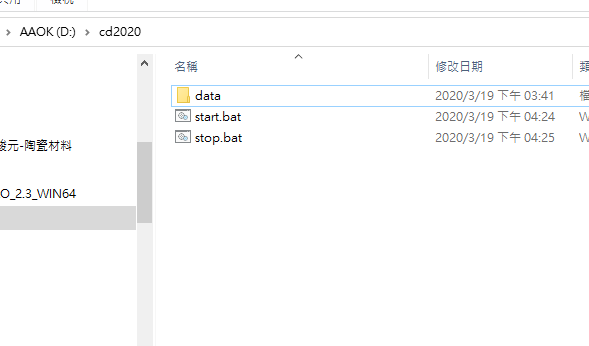
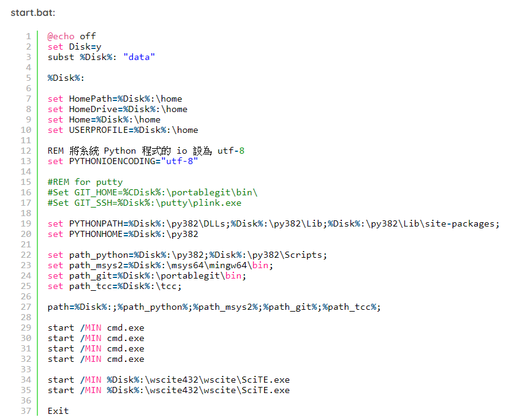
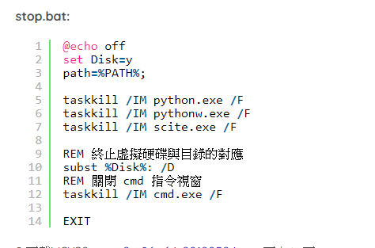
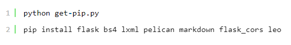
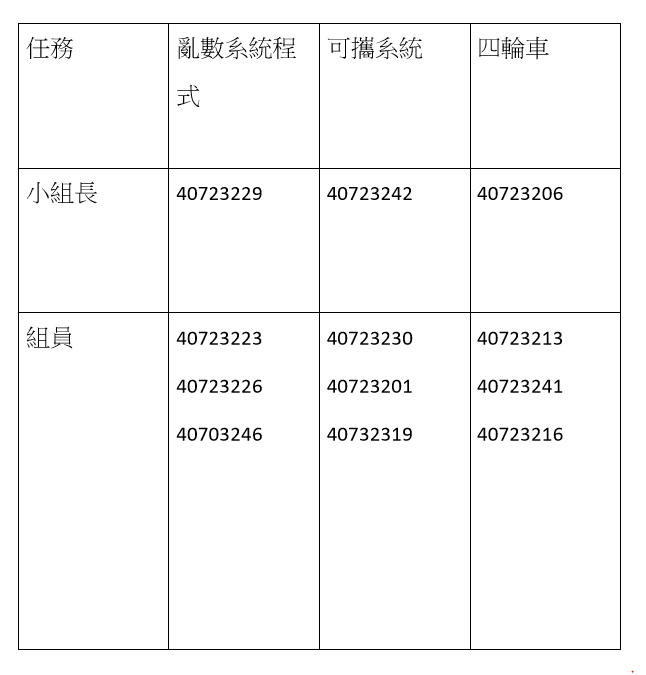
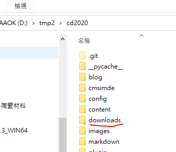

weeks <<
Previous Next >> week6~week9
week1~week5
WEEK1
text:
1.下載2019Fall可攜套件.7z (編譯 Solvespace 用)，完成後開啟。
2.登入個人github帳號，創建新的倉儲cd2020。
3.進入要存放的資料夾
4.輸入git clone https://github.com/s40723246/cd2020 。
5.輸入git submodule add https://github.com/mdecourse/cmsimde.git 。
6.將up_dir的裡的資料複製到cd2020。
7.完成後，python wsgi.py 開始編輯倉儲。
8.編輯完成後， git add . > git commit -m " " > git push。
WEEK2
text:
將可攜系統下的python 3.7.3系統更新至python 3.8.2
1.先去GOOGLE SEARCH PYTHON (點這下載)
2.下載Windows x86-64 executable installer (點這下載)
3.載完點並不要勾選pip選項，接著按下next選取放置資料夾
4.在隨身系統下新增放置資料夾cd2020，並在cd2020下新建資料夾data，data<py382<wscite432<portablegit
5.下載SciTE系統 full 64-bit download，下載完後解壓縮至data下的wscite432
6.在cd2020下建立新的start.bat及stop.bat

7.至SciTE系統更改start.bat及stop.bat


8.載入MSYS2 msys2-x86_64-20190524.exe 至data
9.載入PortableGit 64-bit Git for Windows Portable 至portablegit
10.裝入pip，另存新檔到data
11.測試將python3.8.2版本，將少的模組下載回來

第一組第一次直播會議
第一組 第一次會議PDF內容 (WEEK1)
會議流程:
1.成員簽到
2.討論日後分工
3.有問題的同學提出問題
成員名單
1.40723201 (簽) 已建立完成網站
2.40723206 (簽) 已建立完成網站 小組長
3.40723213 (簽) 已建立完成網站
4.40723216 (簽) 已建立完成網站
5.40723223 (簽) 已建立完成網站
6.40723226 (簽) 已建立完成網站
7.40723229 (簽) 已建立完成網站 小組長
8.40723230 (簽) 無進度
9.40723241 (簽) 已建立完成網站
10.40723242 (簽) 已建立完成網站 小組長
11.40723246 (group leader) (簽) 已建立完成網站
12.40732319 (簽) 無進度
日後小組分工
1.由(40723201、40723206、40723230、40723241、40723246)，已經建立好網站及編輯完網站的同學，前去協助還沒完成的同學，及分配工作
2.40723213、40723242督處尚未完成的同學，互相協助來完成第一周課程
3.40723223、40723223負責處理小組會議
4.40723246 負責製作小組會議PDF
5.40723241、40723216提醒小組問題及完成分組作業

組員會議中提醒的事項:
1.網站的格式及編譯
2.其餘的工作分配
3.PDF放倉儲的download及如何放置

week3
上傳製作完成PDF至DOWNLOADS
由成員執行任務並編譯整理製作PDF
1. Describe how to do an efficient random grouping for this course or do the roll calling randomly?
2. Describe how to prepare a portable Python programming system for Windows 10 64bit system to allow one the maintain CMSiMDE website, Pelican blog and Reveal.js presentation on Github?
3. What do you need to know from http://www.coppeliarobotics.com/helpFiles/index.html to implement a four-wheeled robot?
CoppeliaSim User Manual
translation Simulation ~ PDF
week4
本周報告影片:
PDF內容描述(有字幕)
weeks <<
Previous Next >> week6~week9